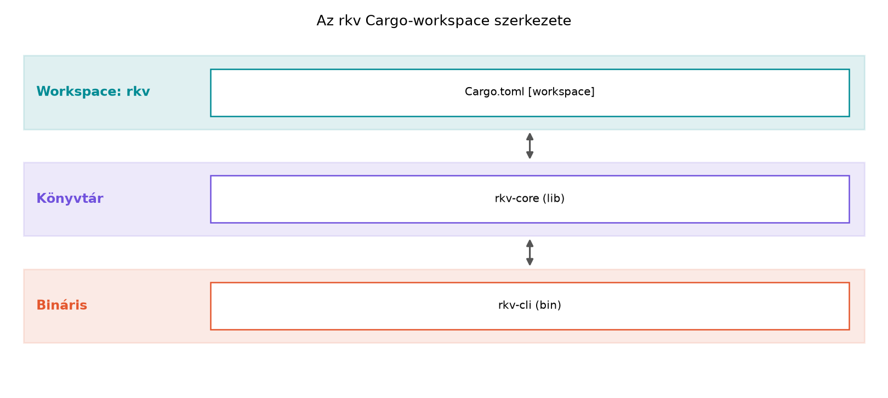

Egy C++ projektben, ha egy könyvtárat és több futtatható programot
akarunk együtt fejleszteni, általában CMake-lel vagy valamilyen
build-generátorral kell több könyvtárat összekapcsolnunk, include
path-okat és linkelési beállításokat kezelnünk. A Rust ökoszisztéma ezt
a problémát a Cargo-workspace fogalmával oldja meg:
egyetlen gyökérkönyvtárból több, egymásra hivatkozó
package-et (csomagot) kezelhetünk, és a fordító, a
függőségfeloldás és a tesztelés egyszerre látja az egészet.
Az rkv mintaprojektet most indítjuk el: létrehozzuk a workspace-t,
egy rkv-core nevű könyvtár-crate-et a tároló logikájával,
és egy rkv-cli nevű bináris-crate-et, amely parancssori
argumentumokból dolgozik. Az első verzió szándékosan egyszerű:
memóriában tárol String kulcs és Vec<u8>
érték párokat, a parancsokat kézzel elemezzük, és semmilyen hiba- vagy
perzisztenciakezelést nem valósítunk meg. Ez a váz az egész könyv során
fokozatosan átalakul majd: megtanuljuk a hibakezeléssel, a modulokkal, a
perzisztenciával és a párhuzamos hozzáféréssel foglalkozó
fejezetekben.
Definíció. A Cargo-workspace olyan
könyvtár, amely egy gyökér Cargo.toml-ben felsorolja a
hozzá tartozó package-eket (csomagokat). Minden package
saját Cargo.toml-lel rendelkezik, és lehet könyvtár
(lib), bináris (bin) vagy mindkettő.
Definíció. A package egy fordítási
egység a Cargo számára; egy package több crate-et is
tartalmazhat (például egy lib-et és több
bin-t). A crate a tényleges fordítási egység, amelyre a
Rust-kódban hivatkozunk.
Definíció. Az útvonal-függőség
(path dependency) olyan függőség, amely nem regisztrált csomagforrásból
(például crates.io), hanem a fájlrendszer egy relatív vagy abszolút
útvonaláról származik. A workspace-en belül ezt a
path = "../rkv-core" formában adjuk meg.
Szabály. A workspace gyökér
Cargo.toml-je [workspace] szekciót tartalmaz,
és members kulccsal sorolja fel a csomagok relatív elérési
útjait. A tagok egymásra hivatkozhatnak path-függőséggel, és a
cargo parancsok a gyökérből kiadva az összes tagot
látják.
Szabály. A Rust programok parancssori argumentumait
a std::env::args() függvény szolgáltatja iterátorként. Az
első elem mindig a program neve (teljes útvonallal), a többi elem pedig
a felhasználó által megadott argumentum. A C++-ban megszokott
argv[0]-nak felel meg.
C++-ban a több binárist és könyvtárat tartalmazó projekt szerkezete
CMake-könyvtárakkal és célokkal épül fel; a Rust ezt natívan, a Cargo
workspace-szel oldja meg. A parancssori argumentumok kezelésében is
eltér a filozófia: C++-ban az argc és argv
kézzel indexelhető, a Rustban egy iterátorral.
Először nézzük meg, hogyan néz ki a C++-ban a feladat minimális váza:
#include <iostream>
#include <map>
#include <string>
#include <vector>
int main(int argc, char* argv[]) {
std::map<std::string, std::vector<unsigned char>> store;
if (argc < 2) {
std::cerr << "Használat: kv <parancs> ...\n";
return 1;
}
std::string cmd = argv[1];
if (cmd == "set" && argc >= 4) {
std::string key = argv[2];
std::string value = argv[3];
store[key] = std::vector<unsigned char>(value.begin(), value.end());
std::cout << "OK\n";
} else if (cmd == "get" && argc >= 3) {
auto it = store.find(argv[2]);
if (it != store.end()) {
std::cout.write(reinterpret_cast<const char*>(it->second.data()),
it->second.size());
std::cout << "\n";
} else {
std::cout << "NOTFOUND\n";
}
}
}A Rust változat ugyanazt a logikát a HashMap és az
args() iterátor segítségével valósítja meg, de az adatokat
típusbiztos módon, String kulccsal és
Vec<u8> értékkel tárolja, és a lekérdezés
Option<&Vec<u8>>-cal jelzi a hiányzó
kulcsot. A C++-os find() + end() ellenőrzés
itt beépül a típusba.
Ebben a laborban a megadott munkakönyvtárban létrehozzuk az rkv workspace-t, a két csomagot, majd futtatjuk a CLI-t.
Munkakönyvtár: ~/rust-labor/rkv/ (a
labor elején hozzuk létre); a kísérletekhez használt egyéb könyvtárak a
~/rust-labor/rNNN/ sémát követik.
Először hozzuk létre a gyökérkönyvtárat, és abban a gyökér
Cargo.toml-t:
mkdir -p ~/rust-labor/rkv
cd ~/rust-labor/rkvA gyökér Cargo.toml tartalma:
[workspace]
resolver = "2"
members = [
"rkv-core",
"rkv-cli",
]A resolver = "2" a modern függőségfeloldót jelöli; a
tagokat a members lista sorolja fel. Megjegyzés: a
resolver beállítás pontos hatása a Cargo dokumentációjában
ellenőrizendő, de a 2-es ajánlott új projektekhez.
rkv-core könyvtár-csomag létrehozásaA workspace-en belül hozzuk létre a könyvtár csomagot:
cargo new rkv-core --lib
cd rkv-coreA generált Cargo.toml-t egészítsük ki a workspace
edition beállításával. A cargo new alapból a telepített
toolchain aktuális editionjét írja be; mi most a workspace egységes
2024-es editionjét használjuk, ha a telepített compiler támogatja. Ha a
rendszeren lévő Rust még nem támogatja a 2024-es editiont, állítsuk
vissza 2021-re. A Cargo.toml:
[package]
name = "rkv-core"
version = "0.1.0"
edition = "2024"
[dependencies]A src/lib.rs tartalmát cseréljük a következőre:
use std::collections::HashMap;
/// Egyszerű memóriabeli kulcs–érték tároló.
///
/// A kulcs `String`, az érték `Vec<u8>`. Ez a választás az egész könyvben
/// érvényben marad: a kulcsok szövegesek, az értékek tetszőleges bájtok
/// lehetnek, ezért nem kényszerítjük őket UTF-8-ba.
pub struct Store {
data: HashMap<String, Vec<u8>>,
}
impl Store {
/// Üres tárolót hoz létre.
pub fn new() -> Self {
Self {
data: HashMap::new(),
}
}
/// Kulcs-érték pár beillesztése vagy felülírása.
pub fn set(&mut self, key: String, value: Vec<u8>) {
self.data.insert(key, value);
}
/// Kulcs alapján történő lekérdezés.
///
/// Visszaad egy `Option<&Vec<u8>>` értéket:
/// - `Some(&Vec<u8>)`, ha a kulcs létezik,
/// - `None`, ha nem.
pub fn get(&self, key: &str) -> Option<&Vec<u8>> {
self.data.get(key)
}
/// Kulcs törlése; visszaadja a törölt értéket, ha létezett.
pub fn delete(&mut self, key: &str) -> Option<Vec<u8>> {
self.data.remove(key)
}
/// Az összes kulcs visszaadása iterátorként.
pub fn keys(&self) -> impl Iterator<Item = &String> {
self.data.keys()
}
}A Store típus és a hozzá tartozó impl blokk
a Structok és metódusok: impl blokkok, asszociált
függvények alfejezetben lesz részletesen kibontva. Most csak annyit
jegyzünk meg: az impl Store blokk a Rust módja az
osztálymetódusok definiálására; a pub a láthatóságot
szabályozza, hasonlóan a C++ public: szekciójához, de itt
minden elem alapból privát.
rkv-cli bináris-csomag létrehozásaTérjünk vissza a workspace gyökerébe, és hozzuk létre a CLI csomagot:
cd ..
cargo new rkv-cli --bin
cd rkv-cliA Cargo.toml-ben adjuk meg a rkv-core
függőséget path-függőségként:
[package]
name = "rkv-cli"
version = "0.1.0"
edition = "2024"
[dependencies]
rkv-core = { path = "../rkv-core" }Fontos: a Cargo csomag nevében kötőjel van (rkv-core),
de a Rust-kódban a crate hivatkozása alávonással történik:
rkv_core. Ezt a Cargo automatikusan leképezi.
A src/main.rs tartalma:
use std::env;
use rkv_core::Store;
fn main() {
let mut store = Store::new();
let args: Vec<String> = env::args().collect();
// args[0] a program neve, args[1] a parancs.
if args.len() < 2 {
eprintln!("Használat: kv <parancs> [argumentumok]");
return;
}
let cmd = &args[1];
match cmd.as_str() {
"set" => {
if args.len() < 4 {
eprintln!("Használat: kv set <kulcs> <érték>");
return;
}
let key = args[2].clone();
let value = args[3].clone().into_bytes();
store.set(key, value);
println!("OK");
}
"get" => {
if args.len() < 3 {
eprintln!("Használat: kv get <kulcs>");
return;
}
match store.get(&args[2]) {
Some(bytes) => {
// Az érték tetszőleges bájt lehet; itt most szövegként
// próbáljuk kiírni, ami UTF-8-ban beválik.
match String::from_utf8(bytes.clone()) {
Ok(s) => println!("{s}"),
Err(_) => println!("BIN ({})", bytes.len()),
}
}
None => println!("NOTFOUND"),
}
}
"del" => {
if args.len() < 3 {
eprintln!("Használat: kv del <kulcs>");
return;
}
match store.delete(&args[2]) {
Some(_) => println!("OK"),
None => println!("NOTFOUND"),
}
}
"list" => {
for key in store.keys() {
println!("{key}");
}
}
_ => {
eprintln!("Ismeretlen parancs: {cmd}");
}
}
}A szándékosan egyszerű kódban a hiányzó argumentumoknál nem lépünk ki
hibakóddal, és a clone() hívásokkal a tulajdonjogot
kerüljük meg, amit a későbbi fejezetekben a borrowing és a hibakezelés
tárgyalásakor javítunk. A String::from_utf8 és a
bytes.clone() jelzi, hogy az érték nem feltétlenül szöveg;
a BIN (n) kiírás a lehetséges bináris tartalmat kezeli.
A workspace gyökeréből futtassuk a programot:
cd ~/rust-labor/rkv
cargo run --bin rkv-cli -- set name AliceVárható kimenet:
OKEzután lekérdezzük:
cargo run --bin rkv-cli -- get nameVárható kimenet:
AlicePróbáljuk ki a del és a list parancsokat
is:
cargo run --bin rkv-cli -- set age 42
cargo run --bin rkv-cli -- listA list a kulcsokat adja vissza, de mivel a
HashMap nem garantál rendezett sorrendet, a kimenet nem
meghatározott sorrendű; ezért a fenti példában az age és a
name sorrendje eltérhet a beillesztés sorrendjétől.
A --bin rkv-cli opcióval egyértelműen megadjuk, melyik
binárist futtassuk; a -- előtti részt a Cargo fogyasztja,
utána a program argumentumai következnek.
A létrejött szerkezet rétegábrája:

A szöveges magyarázat szerint a felső szint a workspace gyökér,
alatta a könyvtár- és a bináris-csomag. A nyíl a rkv-cli
-> rkv-core függőséget jelképezi, bár a
layers diagram az általános irányt mutatja: a magasabb
szintű bináris az alacsonyabb szintű könyvtárat használja.
A workspace gyökeréből kiadott cargo run nem
találja a binárist. Ha a gyökérben nincs package
bin cél, a Cargo hibát adhat. Pontos üzenet: a Cargo
verziójától függően no bin target named .... A megoldás:
használjuk a --bin rkv-cli opciót vagy a
-p rkv-cli műveletet, ahogy fent tettük.
A std::env::args() első elemével való
elszámolás. C++-ban az argv[1] az első
felhasználói argumentum, a Rustban az args().nth(1) adja
ugyanezt. Ha valaki elfelejti, hogy az iterátor első eleme a program
neve, elcsúsznak az indexek, és hibás parancsértelmezést
kapunk.
A path-függőség kihagyása. Ha a
rkv-cli Cargo.toml-jéből hiányzik a
rkv-core = { path = "../rkv-core" } bejegyzés, a
use rkv_core::Store; sor fordítási hibát ad, mert a crate
nem található. A Cargo pontos hibaüzenete a függőség hiányát jelzi, de a
kezdő számára nem mindig egyértelmű, hogy a workspace-en belül is
explicit path-függőséget kell bejegyezni.
A HashMap sorrendjének
feltételezése. A list parancs a kulcsokat
véletlenszerű sorrendben adhatja vissza, mert a HashMap a
hash-alapú tárolás miatt nem őrzi meg a beillesztés vagy a rendezettség
sorrendjét. Aki C++-ból std::map-hez van szokva,
meglepődhet; ott a std::map rendezett, de a
std::unordered_map nem. A Rustban a rendezett változat a
BTreeMap, amelyet a Gyűjtemények: Vec,
HashMap, BTreeMap és társaik; az Entry API alfejezet
tárgyal.
Melyik állítás igaz a Cargo-workspace-re?
Cargo.toml-ben definiálódik.Cargo.toml-je felsorolja a tagokat,
és minden tagnak saját Cargo.toml-je van, amelyben
path-függőséggel hivatkozhat egymásra.Válasz: c.
Adott egy egyszerű C++ snippets:
void process(std::map<std::string, std::string>& store,
const std::string& cmd, const std::string& key,
const std::string& value) {
if (cmd == "put") {
store[key] = value;
} else if (cmd == "fetch") {
auto it = store.find(key);
if (it != store.end()) {
std::cout << it->second;
}
}
}Írd át a fenti logikát úgy, hogy az általunk készített
Store típust használja, és az értékeket String
helyett Vec<u8>-ként tárolja. A put
parancs store.set(key, value.into_bytes())-tel, a
fetch pedig store.get(&key)-vel valósuljon
meg; a hiányzó kulcs esetén írj ki NOTFOUND-ot.
Bővítsd az rkv-cli-t egy clear paranccsal,
amely törli az összes kulcs-érték párt. Ehhez először a
Store-hoz adj egy clear(&mut self)
metódust, amely kiüríti a data HashMap-et
(használhatod a HashMap::clear()-t). A CLI-ben a
clear parancs ne várjon argumentumot, törölje a tárolót, és
írjon ki OK-t.
Az aktuális main.rs minden parancsot ugyanabban a
függvényben kezel, és a hibás argumentumszámoknál nem ad vissza
hibakódot. Refaktoráld a kódot úgy, hogy a parancsfeldolgozást kiemeled
egy külön
process_command(store: &mut Store, args: &[String])
függvénybe, és a hibás argumentumszámoknál a függvény
Result<(), String>-et adjon vissza, amelyet a
main kiír, és kilépési kódot ad. (A Result
típusról a Result, a ? operátor és a panic helye
alfejezet szól majd részletesen; most elég, ha Err-rel
jelzed a hibát.)
A helyes válasz c. A workspace gyökér Cargo.toml-je
[workspace] szekcióval és members listával
definiálja a tagokat; minden tagnak külön Cargo.toml-je
van, és a path-függőségekkel kapcsolódnak.
A Rust megfelelő:
use rkv_core::Store;
fn process(store: &mut Store, cmd: &str, key: &str, value: &str) {
match cmd {
"put" => {
store.set(key.to_string(), value.to_string().into_bytes());
}
"fetch" => {
match store.get(key) {
Some(bytes) => {
if let Ok(s) = String::from_utf8(bytes.clone()) {
println!("{s}");
} else {
println!("BIN ({})", bytes.len());
}
}
None => println!("NOTFOUND"),
}
}
_ => {}
}
}A store.set a String kulcsot és a
Vec<u8> értéket vár; a
value.into_bytes() a String-et
Vec<u8>-tá alakítja. A get
Option-t ad, ezért a match a hiányzó kulcsot
is kezeli.
A Store bővítése:
impl Store {
// ... korábbi metódusok ...
/// Minden kulcs-érték pár törlése.
pub fn clear(&mut self) {
self.data.clear();
}
}A main.rs-ben új ág a
match cmd.as_str()-ben:
"clear" => {
store.clear();
println!("OK");
}A process_command függvény:
fn process_command(store: &mut Store, args: &[String]) -> Result<(), String> {
let cmd = args.get(0).ok_or("Hiányzó parancs")?;
match cmd.as_str() {
"set" => {
let key = args.get(1).ok_or("Hiányzó kulcs")?;
let value = args.get(2).ok_or("Hiányzó érték")?;
store.set(key.clone(), value.clone().into_bytes());
println!("OK");
}
"get" => {
let key = args.get(1).ok_or("Hiányzó kulcs")?;
match store.get(key) {
Some(bytes) => {
if let Ok(s) = String::from_utf8(bytes.clone()) {
println!("{s}");
} else {
println!("BIN ({})", bytes.len());
}
}
None => println!("NOTFOUND"),
}
}
"del" => {
let key = args.get(1).ok_or("Hiányzó kulcs")?;
match store.delete(key) {
Some(_) => println!("OK"),
None => println!("NOTFOUND"),
}
}
"list" => {
for key in store.keys() {
println!("{key}");
}
}
"clear" => {
store.clear();
println!("OK");
}
other => return Err(format!("Ismeretlen parancs: {other}")),
}
Ok(())
}A main ekkor:
fn main() {
let args: Vec<String> = env::args().collect();
let mut store = Store::new();
// Az args[1..] tartalmazza a parancsot és az argumentumait.
if let Err(err) = process_command(&mut store, &args[1..]) {
eprintln!("{err}");
std::process::exit(1);
}
}Ez a kód a Result segítségével jelzi a hibákat, és a
hibás parancsoknál a program kilépési kódja 1 lesz; a későbbi
fejezetekben ezt a hibakezelést a ? operátorral és saját
hibatípussal finomítjuk.
Létrehoztuk az rkv Cargo-workspace-t a ~/rust-labor/rkv/
könyvtárban, amely két csomagot tartalmaz: az rkv-core
könyvtárat (crate név: rkv_core) és az rkv-cli
binárist. A Store típus (fájl:
rkv-core/src/lib.rs) egy
HashMap<String, Vec<u8>>-at foglal magába, és
new, set, get,
delete, keys, valamint a feladatban hozzáadott
clear metódusokat kínálja. A rkv-cli bináris
(fájl: rkv-cli/src/main.rs) a std::env::args()
segítségével elemzi a parancsokat (set, get,
del, list, clear), és a
Store API-t hívja. A workspace-hez a gyökér
Cargo.toml [workspace] szekciója és a tagok
members listája tartozik; a rkv-cli
path-függőséggel hivatkozik a core csomagra. Továbbvitt
eredmények: a Store struct és az impl
blokk a Structok és metódusok: impl blokkok,
asszociált függvények alfejezetben kerül mélyebb elemzésre; a
modulok és láthatóság a Modulok és láthatóság:
header nélküli világ alfejezetben finomodik; a hibakezelés
hiányosságait a Result, a ? operátor és a panic
helye alfejezet javítja; végül a HashMap használatát a
Gyűjtemények: Vec, HashMap, BTreeMap és társaik; az
Entry API alfejezet tanítja meg részletesen.
A fejezet a Cargo workspace és az std::env::args
hivatalos dokumentációjára épít, amelyek a megadott
forráskiindulópontokban találhatók:
https://doc.rust-lang.org/cargo/ és
https://doc.rust-lang.org/book/. A pontos hibaüzenetek a
Rust és Cargo verziójától függenek; a resolver = "2"
beállítás és a 2024-es edition stabilizálásának pontos verziója
ellenőrzést igényel. A HashMap sorrendi viselkedése a
szabványos könyvtár dokumentációja szerint nem garantált, ezért a
list parancs kimenete nem rendezett.